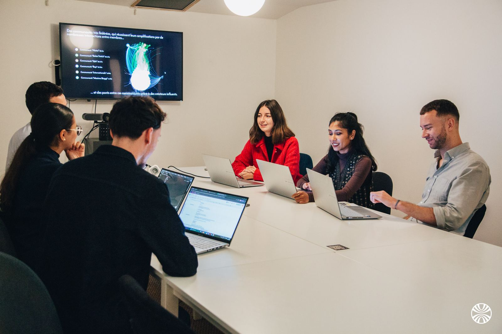
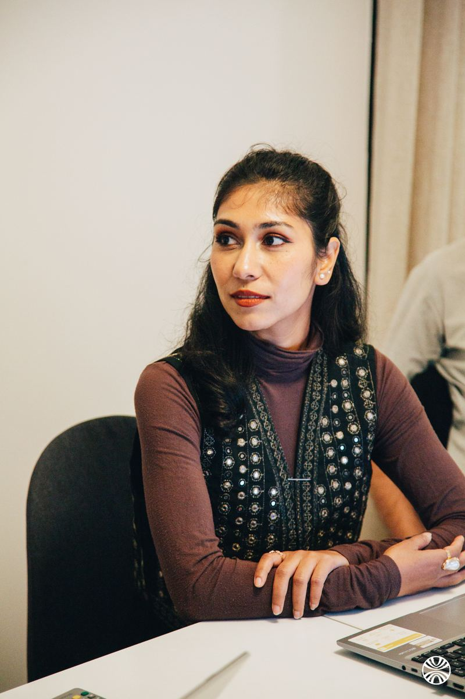
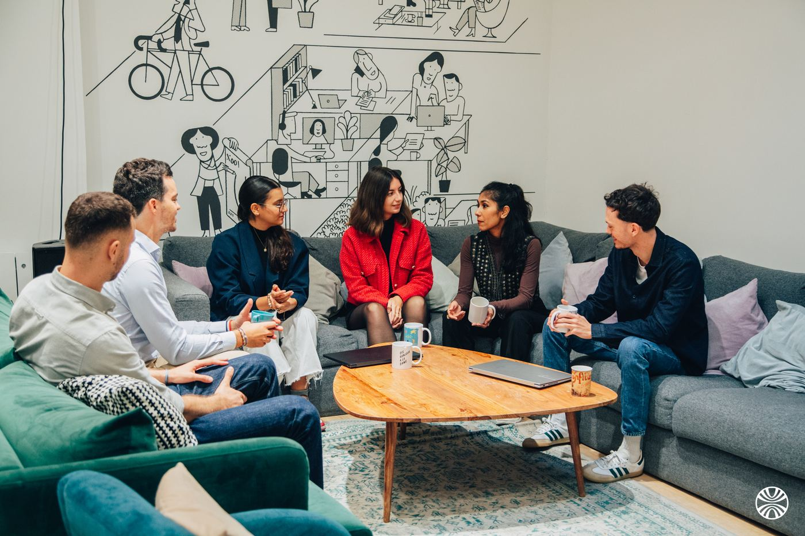
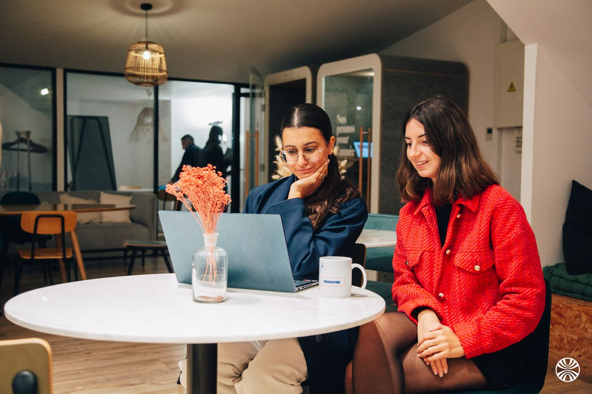

A panel nobody has to recruit
Three billion people already publish what they like, follow, buy and reject. We profile that behaviour daily instead of asking a thousand people to declare it.
WHY LICTER
That sentence is our founders'. It is also the whole method: the largest consumer panel in the world already exists, it publishes every day, and almost nobody reads it properly.
WHERE WE COME FROM
Licter was founded in 2022 by Antoine Khaitrine and Adrien Krebs, who led the Data & Digital Analysis cell at the Élysée. They left with a conviction: French organisations were several years behind their American and British counterparts on audience intelligence, monitoring and social listening — and the gap was a method gap, not a data gap.


WHAT MAKES THE DIFFERENCE
The difference is not the volume of data. It is who reads it, and what they are asked to conclude from it.
Three billion people already publish what they like, follow, buy and reject. We profile that behaviour daily instead of asking a thousand people to declare it.
Our consultants work in Mandarin, English, Spanish, Hindi, Cantonese and Arabic. A market read through translation is a market read half-wrong.
We combine our own profiling algorithms with the leading platforms on the market — we are not selling you a seat on one of them.
Fixed fee, unlimited studies, no commitment. Nobody has to arbitrate between two questions because the budget only covers one.
WHO WE WORK WITH
The same panel answers three very different mandates — which is usually how a first project turns into a shared resource.


Personas, segmentation, market studies and trend reads, built on behaviour rather than on a recruited sample.
Campaign impact, spokesperson strategy, ambassador selection, and the reputation signal that comes back.
Product verdicts, unmet needs, competitive whitespace and the trends that decide a roadmap.
The fastest way to judge us is to hand us a decision you are currently making on instinct.
NOTED - WE GET BACK TO YOU WITHIN 24 HOURS
Already running social listening? Request a diagnostic instead →